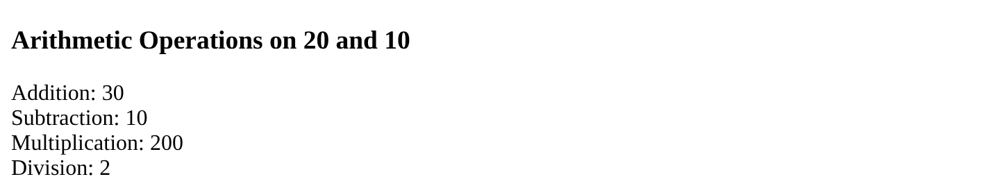

Write a PHP code to perform arithmetic operations (addition, subtraction, multiplication, division).
Program 2.5: Performing Addition, Subtraction, Multiplication, and Division
Concepts used
Variables, the arithmetic operators +, -, * and /, expressions in parentheses, the dot operator.
Test data: First number: 20; second number: 10.
Logic
- Store the two numbers in variables.
- Calculate the four results and store each in a separate variable.
- Display each result after a suitable label.
Code
<?php$first = 20;$second = 10; // must not be zero, because it is used as a divisor $sum = $first + $second;$difference = $first - $second;$product = $first * $second;$quotient = $first / $second;?><!DOCTYPE html><html lang="en"><head> <meta charset="UTF-8"> <title>Arithmetic Operations</title></head><body> <?php echo "<h3>Arithmetic Operations on $first and $second</h3>"; echo "Addition: " . $sum . "<br>"; echo "Subtraction: " . $difference . "<br>"; echo "Multiplication: " . $product . "<br>"; echo "Division: " . $quotient . "<br>"; ?></body></html>
Output
These are real screenshots, taken by running the program with the test data.

Understanding the output
The four lines show the results of the four operators. The division result is printed as 2, not 2.0, because 20 is exactly divisible by 10 and PHP gives an integer in that case. If the second number is changed to 3, the division line becomes Division: 6.6666666666667, a float, while the other lines show 23, 17 and 60.
How it works
The two numbers are stored in $first and $second. Each of the next four statements evaluates one arithmetic expression and stores its result: 20 + 10 = 30, 20 − 10 = 10, 20 × 10 = 200 and 20 ÷ 10 = 2. Calculating the results first and printing them later keeps the output statements short. In the HTML part, the heading uses interpolation to show the two numbers, and each later line joins a label with a result through the dot operator.
Run it yourself
Real PHP 8.3 runs inside your browser (nothing is sent to a server). Forms, links, cookies and sessions work as they do in XAMPP. The first run downloads PHP, so it needs internet and takes a few seconds.
Try this:
- Change the second number from 10 to 3 and see the division become a decimal number.
- Add a line for the modulus operator:
echo "Remainder: " . ($a % $b);
Running it in XAMPP
Save the file in C:\xampp\htdocs\phpbook\ch02 and open http://localhost/phpbook/ch02/arithmetic.php.
Common mistakes
- Setting the second number to 0, which stops the script with Division by zero.
- Writing
$firstx$secondfor multiplication; PHP uses the asterisk *. - Writing 20 / 10 inside quotation marks, as in "20 / 10", which prints the text instead of calculating it.